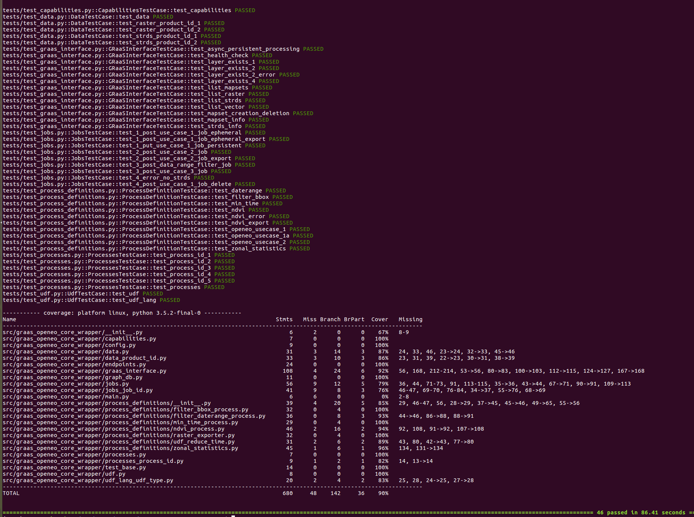
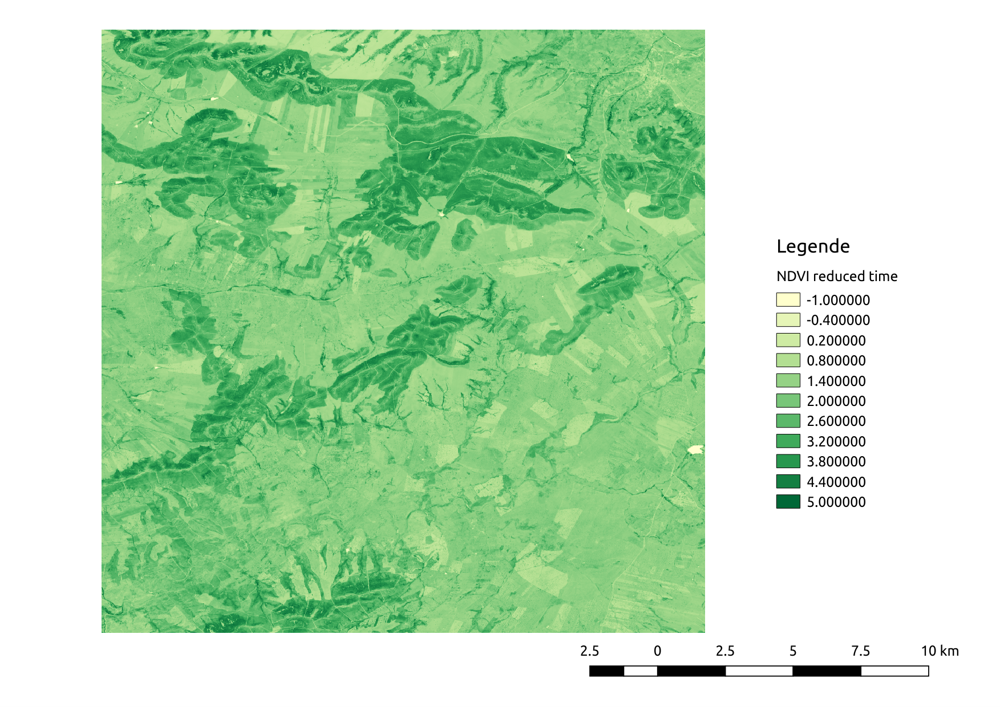

The OpenEO GRASS GIS driver¶
The OpenEO GRASS GIS driver implements the openEO Core API interface for the GRASS GIS as a Service (Actinia Core; available from https://github.com/mundialis/actinia_core) software solution for parallel, large scale geodata processing.
It is a highly scalable REST interface to process geodata with the GRASS GIS in a distributed environment. GRASS GIS is a free and open source software package providing geospatial processing engines in a single integrated environment for raster, vector, and 3D-voxel processing as well as image processing capabilities.
It is deployed on openeo.mundialis.de and will be used for processing all openEO API calls that are send to the the OpenEO GRASS GIS driver.
What is openEO?
openEO - A Common, Open Source Interface between Earth Observation Data Infrastructures and Front-End Applications is an H2020 project funded under call EO-2-2017: EO Big Data Shift, under grant number 776242. The project runs from Oct 2017 to Sept 2020.
Purpose of this document
This document demonstrates the application of the openEO Actinia Core wrapper to solve the three use cases that were defined by the development group for the first prototype:
https://open-eo.github.io/openeo-api/v/0.4.0/examples-poc/
Documentation reference page: https://open-eo.github.io/openeo-grassgis-driver/
Installation¶
An active internet connection is required. All requests to the openEO GRASS GIS driver will be send to the openeo.mundialis.de server and processed on the actinia.mundialis.de backend.
Deploy the openEO GRASS GIS driver locally:
Clone the openEO GRASS GIS driver and install the required Python packages. It is preferred to run the openEO actinia_core wrapper in a virtual python environment:
git clone https://github.com/Open-EO/openeo-grassgis-driver.git cd openeo-grassgis-driver virtualenv -p python3 venv . venv/bin/activate pip install -r requirements.txt python setup.py installRun the openEO GRASS GIS driver test suite:
python setup.py testThe test result should look like this:
Run the server locally:
python -m openeo_grass_gis_driver.main
Alternatively use the docker deployment located in the docker directory of this repository
Make sure the actinia deployment is reachable by the openEO GRASS GIS driver container
Deploy the openEO GRASS GIS driver docker container
docker build -t openeo_grass_gis_driver docker docker run --name=openeo_grass_gis_driver -p 5000:5000 openeo_grass_gis_driver
Explore the capabilities, data and processes that are available (see below for openeo.mundialis.de server examples):
curl ${AUTH} https://openeo.mundialis.de/api/v0.4/ curl ${AUTH} https://openeo.mundialis.de/api/v0.4/collections curl ${AUTH} https://openeo.mundialis.de/api/v0.4/processes
Available endpoints
endpoint: “/credentials/basic”
endpoint: “/result”
endpoint: “/collections”
endpoint: “/collections/{collection_id}”
endpoint: “/processes”
endpoint: “/processes/{process_id}”
endpoint: “/validation”
endpoint: “/process_graphs”
endpoint: “/process_graphs/{process_graph_id}”
endpoint: “/output_formats”
endpoint: “/jobs”
endpoint: “/jobs/{job_id}”
endpoint: “/jobs/{job_id}/results”
The openEO use cases - ATTENTION - below requires further updates to reflect API v0.4¶
First list all available data in the actinia database, the list was shortened, since aver 120 raster layer are in the database:
export ACTINIA_USER='demouser' export ACTINIA_PASSWORD='gu3st!pa55w0rd' export actinia="https://actinia.mundialis.de" export AUTH="-u $ACTINIA_USER:$ACTINIA_PASSWORD" curl ${AUTH} https://openeo.mundialis.de/collections
It will give the following (shortened here) output:
{ "collections": [ { "title": "Space time raster dataset", "description": "Space time raster dataset GRASS GIS location/mapset path: /nc_spm_08/modis_lst", "license": "proprietary", "extent": { "spatial": [ -180, -90, 180, 90 ], "temporal": [ "1900-01-01T00:00:00", "2100-01-01T00:00:00" ] }, "links": [ { "href": "http://www.mundialis.de", "title": "mundialis" } ], "stac_version": "0.6.2", "id": "nc_spm_08.modis_lst.strds.LST_Day_monthly" }, { "title": "Raster dataset", "description": "Raster dataset GRASS GIS location/mapset path: /nc_spm_08/modis_lst", "license": "proprietary", "extent": { "spatial": [ -180, -90, 180, 90 ], "temporal": [ "1900-01-01T00:00:00", "2100-01-01T00:00:00" ] }, "links": [ { "href": "http://www.mundialis.de", "title": "mundialis" } ], "stac_version": "0.6.2", "id": "nc_spm_08.modis_lst.raster.MOD11B3.A2015001.h11v05.single_LST_Day_6km" }, { "title": "Raster dataset", "description": "Raster dataset GRASS GIS location/mapset path: /nc_spm_08/modis_lst", "license": "proprietary", "extent": { "spatial": [ -180, -90, 180, 90 ], "temporal": [ "1900-01-01T00:00:00", "2100-01-01T00:00:00" ] }, "links": [ { "href": "http://www.mundialis.de", "title": "mundialis" } ], "stac_version": "0.6.2", "id": "nc_spm_08.modis_lst.raster.MOD11B3.A2015032.h11v05.single_LST_Day_6km" }, { "title": "Raster dataset", "description": "Raster dataset GRASS GIS location/mapset path: /nc_spm_08/modis_lst", "license": "proprietary", "extent": { "spatial": [ -180, -90, 180, 90 ], "temporal": [ "1900-01-01T00:00:00", "2100-01-01T00:00:00" ] }, "links": [ { "href": "http://www.mundialis.de", "title": "mundialis" } ], "stac_version": "0.6.2", "id": "nc_spm_08.modis_lst.raster.MOD11B3.A2015060.h11v05.single_LST_Day_6km" }, ], "links": [ { "href": "http://www.mundialis.de", "title": "mundialis" } ] }
Get information about band 04 of the Sentinel-2A time series:
curl ${AUTH} https://openeo.mundialis.de/collections/latlong_wgs84.sentinel2A_openeo_subset.strds.S2A_B04{ "title": "Space time raster dataset", "description": "GRASS GIS location/mapset path: /latlong_wgs84/sentinel2A_openeo_subset", "license": "proprietary", "extent": { "spatial": [ -5.333682, 38.738166, -4.038089, 39.745573 ], "temporal": [ "2017-04-12T11:17:08", "2017-09-04T11:18:26" ] }, "links": [ { "href": "http://www.mundialis.de", "title": "mundialis" } ], "stac_version": "0.6.2", "id": "latlong_wgs84.sentinel2A_openeo_subset.strds.S2A_B04" }
Get information about band 08 of the Sentinel-2A time series:
curl ${AUTH} https://openeo.mundialis.de/collections/latlong_wgs84.sentinel2A_openeo_subset.strds.S2A_B08{ "title": "Space time raster dataset", "description": "GRASS GIS location/mapset path: /latlong_wgs84/sentinel2A_openeo_subset", "license": "proprietary", "extent": { "spatial": [ -5.333682, 38.738166, -4.038089, 39.745573 ], "temporal": [ "2017-04-12T11:17:08", "2017-09-04T11:18:26" ] }, "links": [ { "href": "http://www.mundialis.de", "title": "mundialis" } ], "stac_version": "0.6.2", "id": "latlong_wgs84.sentinel2A_openeo_subset.strds.S2A_B08" }
List process information about all processes that are available for computation:
curl ${AUTH} https://openeo.mundialis.de/processes{ "links": [], "processes": [ { "deprecated": false, "description": "Applies a mask to an EO dataset. Each pixel that is 0 or nodata in the mask is set to nodata. See also multilayer_mask.", "experimental": false, "id": "apply_mask", "links": [], "parameters": { "data": { "depricated": false, "description": "Any openEO process object that returns raster datasets or a space-time raster dataset", "experimental": false, "required": true, "schema": { "format": "eodata", "type": "object" } }, "mask": { "depricated": false, "description": "Any openEO process object that returns raster datasets or a space-time raster dataset", "experimental": false, "required": true, "schema": { "format": "eodata", "type": "object" } } }, "returns": { "description": "Masked EO data.", "media_type": "application/json", "schema": { "format": "eodata", "type": "object" } }, "summary": "Apply a mask to an EO dataset." }, { "deprecated": false, "description": "Drops observations from raster data or raster time series data that are located outside of a given bounding box.", "experimental": false, "id": "filter_bbox", "links": [], "parameters": { "bottom": { "depricated": false, "description": "The bottom (southern) border of the spatial extent", "experimental": false, "required": true, "schema": { "format": "float", "type": "object" } }, "data": { "depricated": false, "description": "Any openEO process object that returns raster datasets or space-time raster dataset", "experimental": false, "required": true, "schema": { "format": "eodata", "type": "object" } }, "height_res": { "depricated": false, "description": "The height resolution of the spatial extent", "experimental": false, "required": true, "schema": { "format": "float", "type": "object" } }, "left": { "depricated": false, "description": "The left (western) border of the spatial extent", "experimental": false, "required": true, "schema": { "format": "float", "type": "object" } }, "right": { "depricated": false, "description": "The right (eastern) border of the spatial extent", "experimental": false, "required": true, "schema": { "format": "float", "type": "object" } }, "top": { "depricated": false, "description": "The top (northern) border of the spatial extent", "experimental": false, "required": true, "schema": { "format": "float", "type": "object" } }, "width_res": { "depricated": false, "description": "The width resolution of the spatial extent", "experimental": false, "required": true, "schema": { "format": "float", "type": "object" } } }, "returns": { "description": "Processed EO data.", "media_type": "application/json", "schema": { "format": "eodata", "type": "object" } }, "summary": "Filter raster based data by bounding box" }, { "deprecated": false, "description": "Sets the computational bounding box for downstream computation from raster layer.", "experimental": false, "id": "bbox_from_raster", "links": [], "parameters": { "data": { "depricated": false, "description": "Any openEO process object that returns raster datasets", "experimental": false, "required": true, "schema": { "format": "eodata", "type": "object" } } }, "returns": { "description": "Processed EO data.", "media_type": "application/json", "schema": { "format": "eodata", "type": "object" } }, "summary": "Sets the computational bounding box for downstream computation from raster layer." }, { "deprecated": false, "description": "Limits the data cube to the specified interval of dates and/or times.", "experimental": false, "id": "filter_temporal", "links": [], "parameters": { "data": { "depricated": false, "description": "Any openEO process object that returns raster datasets or space-time raster dataset", "experimental": false, "required": true, "schema": { "format": "eodata", "type": "object" } }, "dimension": { "depricated": false, "description": "The temporal dimension to filter on. If the dimension is not set or is set to `null`, the data cube is expected to only have one temporal dimension. Fails with a `TooManyDimensions` error if it has more dimensions. Fails with a `DimensionNotAvailable` error if the specified dimension does not exist.\n\n**Note:** The default dimensions a data cube provides are described in the collection's metadata field `cube:dimensions`.", "experimental": false, "required": false, "schema": { "default": "null", "type": [ "string", "null" ] } }, "extent": { "depricated": false, "description": "Left-closed temporal interval, i.e. an array with exactly two elements:\n\n1. The first element is the start of the date and/or time interval. The specified instance in time is **included** in the interval.\n2. The second element is the end of the date and/or time interval. The specified instance in time is **excluded** from the interval.\n\nThe specified temporal strings follow [RFC 3339](https://tools.ietf.org/html/rfc3339). Although [RFC 3339 prohibits the hour to be '24'](https://tools.ietf.org/html/rfc3339#section-5.7), **this process allows the value '24' for the hour** of an end time in order to make it possible that left-closed time intervals can fully cover the day.\n\nAlso supports open intervals by setting one of the boundaries to `null`, but never both.", "experimental": false, "required": true, "schema": { "examples": [ [ "2015-01-01", "2016-01-01" ], [ "12:00:00Z", "24:00:00Z" ] ], "format": "temporal-interval", "items": { "anyOf": [ { "format": "date-time", "type": "string" }, { "format": "date", "type": "string" }, { "format": "time", "type": "string" }, { "type": "null" } ] }, "maxItems": 2, "minItems": 2, "type": "array" } } }, "returns": { "description": "Processed EO data.", "media_type": "application/json", "schema": { "format": "eodata", "type": "object" } }, "summary": "Temporal filter for a date and/or time interval" }, { "deprecated": false, "description": "Apply Harmonic Analysis of Time-Series (HANTS) to a space-time raster dataset.", "experimental": false, "id": "hants", "links": [], "parameters": { "data": { "depricated": false, "description": "Any openEO process object that returns raster datasets or space-time raster dataset", "experimental": false, "required": true, "schema": { "format": "eodata", "type": "object" } }, "dod": { "depricated": false, "description": "Degree of over-determination", "experimental": false, "required": false, "schema": { "format": "integer", "type": "object" } }, "fet": { "depricated": false, "description": "Fit error tolerance when filtering outliers", "experimental": false, "required": false, "schema": { "format": "float", "type": "object" } }, "nf": { "depricated": false, "description": "The number of frequencies to use", "experimental": false, "required": true, "schema": { "format": "integer", "type": "object" } }, "range_high": { "depricated": false, "description": "Ignore values above this limit", "experimental": false, "required": false, "schema": { "format": "float", "type": "object" } }, "range_low": { "depricated": false, "description": "Ignore values below this limit", "experimental": false, "required": false, "schema": { "format": "float", "type": "object" } }, "reject_high": { "depricated": false, "description": "Reject high outliers", "experimental": false, "required": false, "schema": { "format": "boolean", "type": "object" } }, "reject_low": { "depricated": false, "description": "Reject low outliers", "experimental": false, "required": false, "schema": { "format": "boolean", "type": "object" } } }, "returns": { "description": "Processed EO data.", "media_type": "application/json", "schema": { "format": "eodata", "type": "object" } }, "summary": "Apply HANTS to a space-time raster dataset." }, { "deprecated": false, "description": "This process returns a raster-, a vector- or a space-time raster datasets that is available in the /collections endpoint.", "experimental": false, "id": "load_collection", "links": [], "parameters": { "id": { "depricated": false, "description": "The identifier of a single raster-, vector- or space-time raster dataset", "experimental": false, "required": true, "schema": { "examples": [ "nc_spm_08.landsat.raster.lsat5_1987_10", "nc_spm_08.PERMANENT.vector.lakes", "ECAD.PERMANENT.strds.temperature_1950_2017_yearly" ], "type": "string" } } }, "returns": { "description": "Processed EO data.", "media_type": "application/json", "schema": { "format": "eodata", "type": "object" } }, "summary": "Returns a single dataset that is available in the /collections endpoint for processing" }, { "deprecated": false, "description": "Drops observations from raster data or raster time series data that are outside of the specified interval.", "experimental": false, "id": "mask_invalid_values", "links": [], "parameters": { "data": { "depricated": false, "description": "Any openEO process object that returns raster datasets or space-time raster dataset", "experimental": false, "required": true, "schema": { "format": "eodata", "type": "object" } }, "max": { "depricated": false, "description": "Maximum allowed value", "experimental": false, "required": true, "schema": { "format": "float", "type": "object" } }, "min": { "depricated": false, "description": "Minimum allowed value", "experimental": false, "required": true, "schema": { "format": "float", "type": "object" } } }, "returns": { "description": "Processed EO data.", "media_type": "application/json", "schema": { "format": "eodata", "type": "object" } }, "summary": "Filter raster based data on the specified interval" }, { "deprecated": false, "description": "Applies a mask to a raster data cube replacing values in data that are not null in mask with the new value.", "experimental": false, "id": "mask", "links": [], "parameters": { "data": { "depricated": false, "description": "Any openEO process object that returns raster datasets or space-time raster dataset", "experimental": false, "required": true, "schema": { "format": "eodata", "type": "object" } }, "mask": { "depricated": false, "description": "Any openEO process object that returns raster datasets or space-time raster dataset", "experimental": false, "required": true, "schema": { "format": "eodata", "type": "object" } }, "value": { "depricated": false, "description": "The value used to replace non-zero and `true` values with", "experimental": false, "required": true, "schema": { "format": "string", "type": "object" } } }, "returns": { "description": "Processed EO data.", "media_type": "application/json", "schema": { "format": "eodata", "type": "object" } }, "summary": "Applies a mask to a raster data cube" }, { "deprecated": false, "description": "Creates a mask using several bands of an EO dataset. Each pixel that has nodata or invalid value in any of the layers/bands gets value 1, pixels that have valid values in all layers/bands get value 0.", "experimental": false, "id": "multilayer_mask", "links": [], "parameters": { "data": { "depricated": false, "description": "Any openEO process object that returns raster datasets or a space-time raster dataset", "experimental": false, "required": true, "schema": { "format": "eodata", "type": "object" } } }, "returns": { "description": "Multilayer mask as EO data.", "media_type": "application/json", "schema": { "format": "eodata", "type": "object" } }, "summary": "Create a multilayer mask from several raster datasets." }, { "deprecated": false, "description": "Compute the NDVI based on the red and nir bands of the input datasets.", "experimental": false, "id": "ndvi", "links": [], "parameters": { "nir": { "depricated": false, "description": "Any openEO process object that returns a single space-time raster datasets that contains the NIR band for NDVI computation.", "experimental": false, "required": true, "schema": { "format": "eodata", "type": "object" } }, "red": { "depricated": false, "description": "Any openEO process object that returns a single space-time raster datasets that contains the RED band for NDVI computation.", "experimental": false, "required": true, "schema": { "format": "eodata", "type": "object" } } }, "returns": { "description": "Processed EO data.", "media_type": "application/json", "schema": { "format": "eodata", "type": "object" } }, "summary": "Compute the NDVI based on the red and nir bands of the input datasets." }, { "deprecated": false, "description": "Compute the EVI based on the red, nir, and blue bands of the input datasets.", "experimental": false, "id": "evi", "links": [], "parameters": { "blue": { "depricated": false, "description": "Any openEO process object that returns a single space-time raster datasets that contains the BLUE band for EVI computation.", "experimental": false, "required": true, "schema": { "format": "eodata", "type": "object" } }, "nir": { "depricated": false, "description": "Any openEO process object that returns a single space-time raster datasets that contains the NIR band for EVI computation.", "experimental": false, "required": true, "schema": { "format": "eodata", "type": "object" } }, "red": { "depricated": false, "description": "Any openEO process object that returns a single space-time raster datasets that contains the RED band for EVI computation.", "experimental": false, "required": true, "schema": { "format": "eodata", "type": "object" } }, "scale": { "depricated": false, "description": "Scale factor to convert band values", "experimental": false, "required": false, "schema": { "format": "float", "type": "object" } } }, "returns": { "description": "Processed EO data.", "media_type": "application/json", "schema": { "format": "eodata", "type": "object" } }, "summary": "Compute the EVI based on the red, nir, and blue bands of the input datasets." }, { "deprecated": false, "description": "The normalized difference is computed as *(band1 - band2) / (band1 + band2).", "experimental": false, "id": "normalized_difference", "links": [], "parameters": { "band1": { "depricated": false, "description": "Any openEO process object that returns a single space-time raster datasets that contains the first band for normalized difference computation.", "experimental": false, "required": true, "schema": { "format": "eodata", "type": "object" } }, "band2": { "depricated": false, "description": "Any openEO process object that returns a single space-time raster datasets that contains the second band for normalized difference computation.", "experimental": false, "required": true, "schema": { "format": "eodata", "type": "object" } } }, "returns": { "description": "Processed EO data.", "media_type": "application/json", "schema": { "format": "eodata", "type": "object" } }, "summary": "The normalized difference is computed as *(band1 - band2) / (band1 + band2)." }, { "deprecated": false, "description": "Use a r.macalc expression to compute a new raster dataset from up to 6 existing raster datasets.", "experimental": false, "id": "map_algebra", "links": [], "parameters": { "a": { "depricated": false, "description": "Any openEO process object that returns a single raster datasets identified as $a in the r.mapcalc expression.", "experimental": false, "required": false, "schema": { "format": "eodata", "type": "object" } }, "b": { "depricated": false, "description": "Any openEO process object that returns a single raster datasets identified as $b in the r.mapcalc expression.", "experimental": false, "required": false, "schema": { "format": "eodata", "type": "object" } }, "c": { "depricated": false, "description": "Any openEO process object that returns a single raster datasets identified as $c in the r.mapcalc expression.", "experimental": false, "required": false, "schema": { "format": "eodata", "type": "object" } }, "d": { "depricated": false, "description": "Any openEO process object that returns a single raster datasets identified as $d in the r.mapcalc expression.", "experimental": false, "required": false, "schema": { "format": "eodata", "type": "object" } }, "e": { "depricated": false, "description": "Any openEO process object that returns a single raster datasets identified as $e in the r.mapcalc expression.", "experimental": false, "required": false, "schema": { "format": "eodata", "type": "object" } }, "expression": { "depricated": false, "description": "The r.mapcalc expression", "experimental": false, "required": true, "schema": { "examples": [ "$result = ($a + $b / ($a - $b))" ], "type": "string" } }, "f": { "depricated": false, "description": "Any openEO process object that returns a single raster datasets identified as $f in the r.mapcalc expression.", "experimental": false, "required": false, "schema": { "format": "eodata", "type": "object" } }, "result": { "depricated": false, "description": "An openEO process object identified as RESULT in the r.mapcalc expression.", "experimental": false, "required": true, "schema": { "format": "eodata", "type": "object" } } }, "returns": { "description": "Processed EO data.", "media_type": "application/json", "schema": { "format": "eodata", "type": "object" } }, "summary": "Apply a r.mapcalc expression with up to 6 raster datasets." }, { "deprecated": false, "description": "Reduce the time dimension of a space-time raster dataset by getting the percentile.", "experimental": false, "id": "percentile_time", "links": [], "parameters": { "data": { "depricated": false, "description": "Any openEO process object that returns raster datasets or space-time raster dataset", "experimental": false, "required": true, "schema": { "format": "eodata", "type": "object" } }, "percentile": { "depricated": false, "description": "The percentile to get from a space-time raster dataset", "experimental": false, "required": true, "schema": { "format": "float", "type": "object" } } }, "returns": { "description": "Processed EO data.", "media_type": "application/json", "schema": { "format": "eodata", "type": "object" } }, "summary": "Reduce the time dimension of a space-time raster dataset." }, { "deprecated": false, "description": "Reduce the time dimension of a space-time raster dataset with different reduce options.", "experimental": false, "id": "reduce_time", "links": [], "parameters": { "data": { "depricated": false, "description": "Any openEO process object that returns raster datasets or space-time raster dataset", "experimental": false, "required": true, "schema": { "format": "eodata", "type": "object" } }, "method": { "depricated": false, "description": "The method to reduce the time dimension of a space-time raster dataset", "enum": [ "average", "count", "median", "mode", "minimum", "min_raster", "maximum", "max_raster", "stddev", "range,sum", "variance", "diversity", "slope", "offset", "detcoeff", "quart1", "quart3", "perc90", "skewness", "kurtosis" ], "experimental": false, "required": true, "schema": { "type": "string" } } }, "returns": { "description": "Processed EO data.", "media_type": "application/json", "schema": { "format": "eodata", "type": "object" } }, "summary": "Reduce the time dimension of a space-time raster dataset." }, { "deprecated": false, "description": "This process exports an arbitrary number of raster map layers using the region specified upstream.", "experimental": false, "id": "raster_exporter", "links": [], "parameters": { "data": { "depricated": false, "description": "Any openEO process object that returns raster datasets or space-time raster dataset", "experimental": false, "required": true, "schema": { "format": "eodata", "type": "object" } }, "format": { "depricated": false, "description": "The format of the export. Default is GeotTiff format.", "experimental": false, "required": false, "schema": { "default": "GTiff", "type": "string" } } }, "returns": { "description": "Processed EO data.", "media_type": "application/json", "schema": { "format": "eodata", "type": "object" } }, "summary": "Exports raster map layers using the region specified upstream." }, { "deprecated": false, "description": "This process exports an arbitrary number of raster map layers using the region specified upstream.", "experimental": false, "id": "save_result", "links": [], "parameters": { "data": { "depricated": false, "description": "Any openEO process object that returns raster datasets or space-time raster dataset", "experimental": false, "required": true, "schema": { "format": "eodata", "type": "object" } }, "format": { "depricated": false, "description": "The format of the export. Default is GeotTiff format.", "experimental": false, "required": false, "schema": { "default": "GTiff", "type": "string" } } }, "returns": { "description": "Processed EO data.", "media_type": "application/json", "schema": { "format": "eodata", "type": "object" } }, "summary": "Exports raster map layers using the region specified upstream." }, { "deprecated": false, "description": "This process exports three raster map layers as a single RGB image using the region specified upstream.", "experimental": false, "id": "rgb_raster_exporter", "links": [], "parameters": { "blur": { "depricated": false, "description": "Any openEO process object that returns raster dataset that should be used as the blue channel in the resulting GRB image.", "experimental": false, "required": true, "schema": { "format": "eodata", "type": "object" } }, "green": { "depricated": false, "description": "Any openEO process object that returns raster dataset that should be used as the green channel in the resulting GRB image.", "experimental": false, "required": true, "schema": { "format": "eodata", "type": "object" } }, "red": { "depricated": false, "description": "Any openEO process object that returns raster dataset that should be used as the red channel in the resulting GRB image.", "experimental": false, "required": true, "schema": { "format": "eodata", "type": "object" } } }, "returns": { "description": "Processed EO data.", "media_type": "application/json", "schema": { "format": "eodata", "type": "object" } }, "summary": "Exports three RGB raster map layers using the region specified upstream." }, { "deprecated": false, "description": "Change the resolution of a space-time raster dataset with different methods.", "experimental": false, "id": "resample", "links": [], "parameters": { "data": { "depricated": false, "description": "Any openEO process object that returns raster datasets or space-time raster dataset", "experimental": false, "required": true, "schema": { "format": "eodata", "type": "object" } }, "method": { "depricated": false, "description": "The resampling method to use", "enum": [ "near", "bilinear", "cubic", "lanczos", "average", "mode", "max", "min", "med", "q1", "q3" ], "experimental": false, "required": true, "schema": { "type": "string" } }, "target": { "depricated": false, "description": "Any openEO process object that returns a raster dataset", "experimental": false, "required": true, "schema": { "format": "eodata", "type": "object" } } }, "returns": { "description": "Processed EO data.", "media_type": "application/json", "schema": { "format": "eodata", "type": "object" } }, "summary": "Spatially resample a space-time raster dataset." }, { "deprecated": false, "description": "Scales the image values between specified min and max values.", "experimental": false, "id": "scale_minmax", "links": [], "parameters": { "data": { "depricated": false, "description": "Any openEO process object that returns raster datasets or space-time raster dataset", "experimental": false, "required": true, "schema": { "format": "eodata", "type": "object" } }, "max": { "depricated": false, "description": "New maximum value", "experimental": false, "required": true, "schema": { "format": "float", "type": "object" } }, "min": { "depricated": false, "description": "New minimum value", "experimental": false, "required": true, "schema": { "format": "float", "type": "object" } } }, "returns": { "description": "Processed EO data.", "media_type": "application/json", "schema": { "format": "eodata", "type": "object" } }, "summary": "Rescale raster data based on interval" }, { "deprecated": false, "description": "Compute the zonal statistics of a time series using a vector polygon. The following parameters are computed: mean, min, max, mean_of_abs, stddev, variance, coeff_var, sum, null_cells, cells", "experimental": false, "id": "zonal_statistics", "links": [], "parameters": { "data": { "depricated": false, "description": "Any openEO process object that returns raster datasets or space-time raster dataset", "experimental": false, "required": true, "schema": { "format": "eodata", "type": "object" } }, "polygons": { "depricated": false, "description": "URL to a publicly accessible polygon file readable by OGR", "experimental": false, "required": true, "schema": { "type": "string" } } }, "returns": { "description": "Processed EO data.", "media_type": "application/json", "schema": { "format": "eodata", "type": "object" } }, "summary": "Compute the zonal statistics of a time series using a vector polygon." }, { "deprecated": false, "description": "Use a t.rast.algebra expression to compute a new space-time raster dataset from up to 6 existing space-time raster datasets.", "experimental": false, "id": "temporal_algebra", "links": [], "parameters": { "a": { "depricated": false, "description": "Any openEO process object that returns a single space-time raster datasets identified as $a in the t.rast.algebra expression.", "experimental": false, "required": false, "schema": { "format": "eodata", "type": "object" } }, "b": { "depricated": false, "description": "Any openEO process object that returns a single space-time raster datasets identified as $b in the t.rast.algebra expression.", "experimental": false, "required": false, "schema": { "format": "eodata", "type": "object" } }, "basename": { "depricated": false, "description": "Basename of the new generated raster datasets in the resulting space-time raster datasets", "experimental": false, "required": true, "schema": { "examples": [ "ndvi_base" ], "type": "string" } }, "c": { "depricated": false, "description": "Any openEO process object that returns a single space-time raster datasets identified as $c in the t.rast.algebra expression.", "experimental": false, "required": false, "schema": { "format": "eodata", "type": "object" } }, "d": { "depricated": false, "description": "Any openEO process object that returns a single space-time raster datasets identified as $d in the t.rast.algebra expression.", "experimental": false, "required": false, "schema": { "format": "eodata", "type": "object" } }, "e": { "depricated": false, "description": "Any openEO process object that returns a single space-time raster datasets identified as $e in the t.rast.algebra expression.", "experimental": false, "required": false, "schema": { "format": "eodata", "type": "object" } }, "expression": { "depricated": false, "description": "The t.rast.algebra expression", "experimental": false, "required": true, "schema": { "examples": [ "$result = ($a + $b / ($a - $b))" ], "type": "string" } }, "f": { "depricated": false, "description": "Any openEO process object that returns a single space-time raster datasets identified as $f in the t.rast.algebra expression.", "experimental": false, "required": false, "schema": { "format": "eodata", "type": "object" } }, "result": { "depricated": false, "description": "Any openEO process object that returns a single space-time raster datasets identified as RESULT in the t.rast.algebra expression.", "experimental": false, "required": true, "schema": { "format": "eodata", "type": "object" } } }, "returns": { "description": "Processed EO data.", "media_type": "application/json", "schema": { "format": "eodata", "type": "object" } }, "summary": "Apply a t.rast.algebra expression with up to 6 space-time raster datasets." } ] }
Get information about each available process:
curl ${AUTH} https://openeo.mundialis.de/processes/raster_exporter{ "args": { "collections": { "description": "array of input collections with one element that must be a raster layer" } }, "description": "This process exports an arbitrary number of raster map layers using the region specified upstream.", "process_id": "raster_exporter" }curl ${AUTH} https://openeo.mundialis.de/processes/udf_reduce_time{ "args": { "collections": { "description": "array of input collections with one element" }, "python_file_url": { "description": "The public URL to the python file that contains the udf" } }, "description": "Apply a user defined function (UDF) to a time series of raster layers that produces a single raster layer as output.", "process_id": "udf_reduce_time" }curl ${AUTH} https://openeo.mundialis.de/processes/min_time{ "args": { "collections": { "description": "array of input collections with one element" } }, "description": "Finds the minimum value of time series for all bands of the input dataset.", "process_id": "min_time" }curl ${AUTH} https://openeo.mundialis.de/processes/ndvi{ "args": { "collections": { "description": "array of input collections with one element" }, "nir": { "description": "reference to the nir band" }, "red": { "description": "reference to the red band" } }, "description": "Compute the NDVI based on the red and nir bands of the input dataset.", "process_id": "ndvi" }curl ${AUTH} https://openeo.mundialis.de/processes/filter_temporal{ "args": { "collections": { "description": "array of input collections with one element" }, "from": { "description": "start date" }, "to": { "description": "end date" } }, "description": "Drops observations from a collection that have been captured before a start or after a given end date.", "process_id": "filter_temporal" }curl ${AUTH} https://openeo.mundialis.de/processes/filter_bbox{ "args": { "bottom": { "description": "bottom boundary (latitude / northing)", "required": true }, "collections": { "description": "array of input collections with one element" }, "ewres": { "description": "East-west resolution in mapset units", "required": true }, "left": { "description": "left boundary (longitude / easting)", "required": true }, "nsres": { "description": "North-south resolution in mapset units", "required": true }, "right": { "description": "right boundary (longitude / easting)", "required": true }, "srs": { "description": "spatial reference system of boundaries as proj4 or EPSG:12345 like string" }, "top": { "description": "top boundary (latitude / northing)", "required": true } }, "description": "Drops observations from a collection that are located outside of a given bounding box.", "process_id": "filter_bbox" }curl ${AUTH} https://openeo.mundialis.de/processes/zonal_statistics{ "args": { "imagery": { "description": "array of input collections with at least one element that must be of type time series" }, "regions": { "description": "URL to a publicly accessible polygon file readable by OGR" } }, "description": "Compute the zonal statistics of a time series using a vector polygon. The following parameters are computed: mean, min, max, mean_of_abs, stddev, variance, coeff_var, sum, null_cells, cells", "process_id": "zonal_statistics" }
openEO use case 1¶
Use case one can be addressed in different ways using the openEO GRASS GIS driver wrapper. There are POST and PUT calls for job creation that reflects the concept of persistent and ephemeral processing in actinia databases.
Persistent database approach¶
First, we use the PUT API call to solve use case 1 and store the result in the persistent database.
The following commands show the openEO use case 1 API calls and process graph creation. The command line tool curl was used ot perform the REST API calls.
Create the process graph as JSON code and send it via curl to the backend as a processing job:
{ "process_graph": { "process_id": "min_time", "args": { "collections": [{ "process_id": "ndvi", "args": { "collections": [{ "process_id": "filter_daterange", "args": { "collections": [{ "process_id": "filter_bbox", "args": { "collections": [{"product_id": "LL.sentinel2A_openeo_subset.strds.S2A_B04" }], "bottom": 38.9, "left": -4.8, "right": -4.6, "top": 39.1, "ewres": 0.0001, "nsres": 0.0001, "srs": "EPSG:4326" } }], "from": "2017-04-12 11:17:08", "to": "2017-09-04 11:18:26" } }, { "process_id": "filter_daterange", "args": { "collections": [{ "process_id": "filter_bbox", "args": { "collections": [{ "product_id": "LL.sentinel2A_openeo_subset.strds.S2A_B08" }], "bottom": 38.9, "left": -4.8, "right": -4.6, "top": 39.1, "ewres": 0.0001, "nsres": 0.0001, "srs": "EPSG:4326" } }], "from": "2017-04-12 11:17:08", "to": "2017-09-04 11:18:26" } }], "red": "S2A_B04", "nir": "S2A_B08" } }] } } }
The JSON code must be stored in a shell variable and passed to the curl command:
JSON='{...}' curl -H "Content-Type: application/json" -X PUT -d "${JSON}" https://openeo.mundialis.de/jobs{ "job_id": "resource_id-af2ee1e7-71a4-48f0-953c-e3dacbf9c8c2", "job_info": { "accept_datetime": "2018-03-06 12:43:24.784656", "accept_timestamp": 1520340204.784654, "api_info": { "endpoint": "asyncpersistentresource", "method": "POST", "path": "/locations/latlong_wgs84/mapsets/openeo_mapset_0/processing_async", "request_url": "http://openeo.mundialis.de:8080/locations/latlong_wgs84/mapsets/openeo_mapset_0/processing_async" }, "datetime": "2018-03-06 12:43:24.788535", "http_code": 200, "message": "Resource accepted", "process_results": {}, "resource_id": "resource_id-af2ee1e7-71a4-48f0-953c-e3dacbf9c8c2", "status": "accepted", "time_delta": 0.003916025161743164, "timestamp": 1520340204.788534, "urls": { "resources": [], "status": "http://openeo.mundialis.de:8080/status/user/resource_id-af2ee1e7-71a4-48f0-953c-e3dacbf9c8c2" }, "user_id": "user" } }
We need to poll for the final result using the job id, since the request is asynchronous:
curl -X GET https://openeo.mundialis.de/jobs/resource_id-af2ee1e7-71a4-48f0-953c-e3dacbf9c8c2{ "consumed_credits": 5.816864013671875, "job_id": "resource_id-af2ee1e7-71a4-48f0-953c-e3dacbf9c8c2", "job_info": { "accept_datetime": "2018-03-06 12:43:24.784656", "accept_timestamp": 1520340204.784654, "api_info": { "endpoint": "asyncpersistentresource", "method": "POST", "path": "/locations/latlong_wgs84/mapsets/openeo_mapset_0/processing_async", "request_url": "http://openeo.mundialis.de:8080/locations/latlong_wgs84/mapsets/openeo_mapset_0/processing_async" }, "datetime": "2018-03-06 12:43:30.601449", "http_code": 200, "message": "Running executable t.rast.extract with parameters ['input=S2A_B04@sentinel2A_openeo_subset', \"where= ... subset', 'basename=S2A_B04_extract', 'suffix=num'] for 5.06658 seconds", "progress": { "num_of_steps": 7, "step": 2 }, "resource_id": "resource_id-af2ee1e7-71a4-48f0-953c-e3dacbf9c8c2", "status": "running", "time_delta": 5.816864013671875, "timestamp": 1520340210.601438, "urls": { "resources": [], "status": "http://openeo.mundialis.de:8080/status/user/resource_id-af2ee1e7-71a4-48f0-953c-e3dacbf9c8c2" }, "user_id": "user" }, "last_update": "2018-03-06 12:43:30.601449", "process_graph": { "process_graph": { "args": { "collections": [ { "args": { "collections": [ { "args": { "collections": [ { "args": { "bottom": 38.9, "collections": [ { "product_id": "LL.sentinel2A_openeo_subset.strds.S2A_B04" } ], "ewres": 0.0001, "left": -4.8, "nsres": 0.0001, "right": -4.6, "srs": "EPSG:4326", "top": 39.1 }, "process_id": "filter_bbox" } ], "from": "2017-04-12 11:17:08", "to": "2017-09-04 11:18:26" }, "process_id": "filter_daterange" }, { "args": { "collections": [ { "args": { "bottom": 38.9, "collections": [ { "product_id": "LL.sentinel2A_openeo_subset.strds.S2A_B08" } ], "ewres": 0.0001, "left": -4.8, "nsres": 0.0001, "right": -4.6, "srs": "EPSG:4326", "top": 39.1 }, "process_id": "filter_bbox" } ], "from": "2017-04-12 11:17:08", "to": "2017-09-04 11:18:26" }, "process_id": "filter_daterange" } ], "nir": "S2A_B08", "red": "S2A_B04" }, "process_id": "ndvi" } ] }, "process_id": "min_time" } }, "resources": [], "status": "running", "submitted": "2018-03-06 12:43:24.784656", "user_id": "user" }
The final response will look like this:
curl -X GET https://openeo.mundialis.de/jobs/resource_id-af2ee1e7-71a4-48f0-953c-e3dacbf9c8c2{ "consumed_credits": 26.454089164733887, "job_id": "resource_id-af2ee1e7-71a4-48f0-953c-e3dacbf9c8c2", "job_info": { "accept_datetime": "2018-03-06 12:43:24.784656", "accept_timestamp": 1520340204.784654, "api_info": { "endpoint": "asyncpersistentresource", "method": "POST", "path": "/locations/latlong_wgs84/mapsets/openeo_mapset_0/processing_async", "request_url": "http://openeo.mundialis.de:8080/locations/latlong_wgs84/mapsets/openeo_mapset_0/processing_async" }, "datetime": "2018-03-06 12:43:51.238708", "http_code": 200, "message": "Processing successfully finished", "process_log": [ { "executable": "g.region", "parameter": [ "n=39.1", "s=38.9", "e=-4.6", "w=-4.8", "ewres=0.0001", "nsres=0.0001" ], "return_code": 0, "run_time": 0.05015993118286133, "stderr": [ "" ], "stdout": "" }, { "executable": "t.rast.extract", "parameter": [ "input=S2A_B04@sentinel2A_openeo_subset", "where=start_time >= '2017-04-12 11:17:08' AND end_time <= '2017-09-04 11:18:26'", "output=S2A_B04_filter_daterange", "expression=1.0 * S2A_B04@sentinel2A_openeo_subset", "basename=S2A_B04_extract", "suffix=num" ], "return_code": 0, "run_time": 7.12386679649353, "stderr": [ "Default TGIS driver / database set to:", "driver: sqlite", "database: $GISDBASE/$LOCATION_NAME/$MAPSET/tgis/sqlite.db", "WARNING: Temporal database connection defined as:", "/graas/workspace/temp_db/gisdbase_0e7883deea584a8b8cb5e823390bfa7e/latlong_wgs84/openeo_mapset_0/tgis/sqlite.db", "But database file does not exist.", "Creating temporal database: /graas/workspace/temp_db/gisdbase_0e7883deea584a8b8cb5e823390bfa7e/latlong_wgs84/openeo_mapset_0/tgis/sqlite.db", "0..0..100", "" ], "stdout": "" }, { "executable": "g.region", "parameter": [ "n=39.1", "s=38.9", "e=-4.6", "w=-4.8", "ewres=0.0001", "nsres=0.0001" ], "return_code": 0, "run_time": 0.05012702941894531, "stderr": [ "" ], "stdout": "" }, { "executable": "t.rast.extract", "parameter": [ "input=S2A_B08@sentinel2A_openeo_subset", "where=start_time >= '2017-04-12 11:17:08' AND end_time <= '2017-09-04 11:18:26'", "output=S2A_B08_filter_daterange", "expression=1.0 * S2A_B08@sentinel2A_openeo_subset", "basename=S2A_B08_extract", "suffix=num" ], "return_code": 0, "run_time": 6.909211158752441, "stderr": [ "0..0..100", "" ], "stdout": "" }, { "executable": "t.rast.mapcalc", "parameter": [ "expression=S2A_B08_filter_daterange_NDVI = float((S2A_B08_filter_daterange - S2A_B04_filter_daterange)/(S2A_B08_filter_daterange + S2A_B04_filter_daterange))", "inputs=S2A_B08_filter_daterange,S2A_B04_filter_daterange", "basename=ndvi", "output=S2A_B08_filter_daterange_NDVI" ], "return_code": 0, "run_time": 7.265884876251221, "stderr": [ "Starting temporal sampling...", "Starting mapcalc computation...", "14..28..42..57..71..85..100", "Starting map registration in temporal database...", "14..28..42..57..71..85..100", "" ], "stdout": "" }, { "executable": "t.rast.colors", "parameter": [ "input=S2A_B08_filter_daterange_NDVI", "color=ndvi" ], "return_code": 0, "run_time": 0.5597498416900635, "stderr": [ "Color table for raster map <ndvi_1@openeo_mapset_0> set to 'ndvi'", "Color table for raster map <ndvi_2@openeo_mapset_0> set to 'ndvi'", "Color table for raster map <ndvi_3@openeo_mapset_0> set to 'ndvi'", "Color table for raster map <ndvi_4@openeo_mapset_0> set to 'ndvi'", "Color table for raster map <ndvi_5@openeo_mapset_0> set to 'ndvi'", "Color table for raster map <ndvi_6@openeo_mapset_0> set to 'ndvi'", "Color table for raster map <ndvi_7@openeo_mapset_0> set to 'ndvi'", "" ], "stdout": "" }, { "executable": "t.rast.series", "parameter": [ "input=S2A_B08_filter_daterange_NDVI", "method=minimum", "output=S2A_B08_filter_daterange_NDVI_min_time", "-t" ], "return_code": 0, "run_time": 2.155212879180908, "stderr": [ "0..3..6..9..12..15..18..21..24..27..30..33..36..39..42..45..48..51..54..57..60..63..66..69..72..75..78..81..84..87..90..93..96..99..100", "" ], "stdout": "" } ], "process_results": {}, "progress": { "num_of_steps": 7, "step": 7 }, "resource_id": "resource_id-af2ee1e7-71a4-48f0-953c-e3dacbf9c8c2", "status": "finished", "time_delta": 26.454089164733887, "timestamp": 1520340231.238706, "urls": { "resources": [], "status": "http://openeo.mundialis.de:8080/status/user/resource_id-af2ee1e7-71a4-48f0-953c-e3dacbf9c8c2" }, "user_id": "user" }, "last_update": "2018-03-06 12:43:51.238708", "process_graph": { "process_graph": { "args": { "collections": [ { "args": { "collections": [ { "args": { "collections": [ { "args": { "bottom": 38.9, "collections": [ { "product_id": "LL.sentinel2A_openeo_subset.strds.S2A_B04" } ], "ewres": 0.0001, "left": -4.8, "nsres": 0.0001, "right": -4.6, "srs": "EPSG:4326", "top": 39.1 }, "process_id": "filter_bbox" } ], "from": "2017-04-12 11:17:08", "to": "2017-09-04 11:18:26" }, "process_id": "filter_daterange" }, { "args": { "collections": [ { "args": { "bottom": 38.9, "collections": [ { "product_id": "LL.sentinel2A_openeo_subset.strds.S2A_B08" } ], "ewres": 0.0001, "left": -4.8, "nsres": 0.0001, "right": -4.6, "srs": "EPSG:4326", "top": 39.1 }, "process_id": "filter_bbox" } ], "from": "2017-04-12 11:17:08", "to": "2017-09-04 11:18:26" }, "process_id": "filter_daterange" } ], "nir": "S2A_B08", "red": "S2A_B04" }, "process_id": "ndvi" } ] }, "process_id": "min_time" } }, "resources": [], "status": "finished", "submitted": "2018-03-06 12:43:24.784656", "user_id": "user" }
Several raster time series datasets were produced in the process, that are now available. We show only the new generated rime series and the resulting NDVI raster layer:
curl ${AUTH} https://openeo.mundialis.de/collections[ { "description": "Space time raster dataset", "product_id": "LL.openeo_mapset_0.strds.S2A_B04_filter_daterange", "source": "GRASS GIS location/mapset path: /latlong_wgs84/openeo_mapset_0" }, { "description": "Space time raster dataset", "product_id": "LL.openeo_mapset_0.strds.S2A_B08_filter_daterange", "source": "GRASS GIS location/mapset path: /latlong_wgs84/openeo_mapset_0" }, { "description": "Space time raster dataset", "product_id": "LL.openeo_mapset_0.strds.S2A_B08_filter_daterange_NDVI", "source": "GRASS GIS location/mapset path: /latlong_wgs84/openeo_mapset_0" }, { "description": "Raster dataset", "product_id": "LL.openeo_mapset_0.raster.S2A_B08_filter_daterange_NDVI_min_time", "source": "GRASS GIS location/mapset path: /latlong_wgs84/openeo_mapset_0" } ]
We inspect the new NDVI time series:
curl ${AUTH} https://openeo.mundialis.de/collections/latlong_wgs84.openeo_mapset_0.strds.S2A_B08_filter_daterange_NDVI{ "aggregation_type": "None", "bands": { "band_id": "LL.openeo_mapset_0.strds.S2A_B08_filter_daterange_NDVI" }, "creation_time": "2018-03-06 12:43:46.814135", "description": "Space time raster dataset", "ewres_max": "0.0001", "ewres_min": "0.0001", "extent": { "bottom": 38.9, "left": -4.8, "right": -4.6, "srs": "GEOGCS[\"WGS 84\",DATUM[\"WGS_1984\",SPHEROID[\"WGS 84\",6378137,298.257223563,AUTHORITY[\"EPSG\",\"7030\"]],AUTHORITY[\"EPSG\",\"6326\"]],PRIMEM[\"Greenwich\",0,AUTHORITY[\"EPSG\",\"8901\"]],UNIT[\"degree\",0.0174532925199433,AUTHORITY[\"EPSG\",\"9122\"]],AUTHORITY[\"EPSG\",\"4326\"]]\n", "top": 39.1 }, "granularity": "1 second", "location": "LL", "map_time": "interval", "mapset": "openeo_mapset_0", "max_max": "0.869941", "max_min": "0.748342", "min_max": "-0.348271", "min_min": "-0.549595", "modification_time": "2018-03-06 12:43:46.832132", "nsres_max": "0.0001", "nsres_min": "0.0001", "number_of_maps": "7", "product_id": "LL.openeo_mapset_0.strds.S2A_B08_filter_daterange_NDVI", "source": "GRASS GIS location/mapset path: /latlong_wgs84/openeo_mapset_0", "temporal_type": "2017-04-12 11:17:08", "time": { "from": "2017-04-12 11:17:08", "to": "2017-09-04 11:18:26" } }
Information about the time reduced NDVI raster layer:
curl ${AUTH} https://openeo.mundialis.de/collections/latlong_wgs84.openeo_mapset_0.raster.S2A_B08_filter_daterange_NDVI_min_time{ "cells": "4000000", "cols": "2000", "comments": "\"r.series --overwrite file=\"/graas/workspace/temp_db/gisdbase_0e7883d\\eea584a8b8cb5e823390bfa7e/latlong_wgs84/openeo_mapset_0/.tmp/ba884fb4a052/44602\\.0\" output=\"S2A_B08_filter_daterange_NDVI_min_time\" method=\"minimum\"\\ quantile=\"", "datatype": "DCELL", "description": "Raster dataset", "ewres": "0.0001", "extent": { "bottom": 38.9, "left": -4.8, "right": -4.6, "srs": "GEOGCS[\"WGS 84\",DATUM[\"WGS_1984\",SPHEROID[\"WGS 84\",6378137,298.257223563,AUTHORITY[\"EPSG\",\"7030\"]],AUTHORITY[\"EPSG\",\"6326\"]],PRIMEM[\"Greenwich\",0,AUTHORITY[\"EPSG\",\"8901\"]],UNIT[\"degree\",0.0174532925199433,AUTHORITY[\"EPSG\",\"9122\"]],AUTHORITY[\"EPSG\",\"4326\"]]\n", "top": 39.1 }, "location": "LL", "mapset": "openeo_mapset_0", "nsres": "0.000100000000000001", "product_id": "LL.openeo_mapset_0.raster.S2A_B08_filter_daterange_NDVI_min_time", "rows": "2000", "source": "GRASS GIS location/mapset path: /latlong_wgs84/openeo_mapset_0", "title": "\"S2A_B08_filter_daterange_NDVI_min_time\"" }
Ephemeral database approach¶
The second approach to use case 1 is to use ephemeral processing with the specification of an export process to store the final NDVI raster layer into a cloud storage.
We create the process graph that uses a different approach and an export process at the end as JSON code and send a POST API call via curl to the backend as a processing job:
{ "process_graph": { "process_id": "raster_exporter", "args": { "collections": [{ "process_id": "min_time", "args": { "collections": [{ "process_id": "ndvi", "args": { "collections": [{ "process_id": "filter_daterange", "args": { "collections": [{ "process_id": "filter_bbox", "args": { "collections": [{"product_id": "LL.sentinel2A_openeo_subset.strds.S2A_B04"}, {"product_id": "LL.sentinel2A_openeo_subset.strds.S2A_B08"}], "bottom": 38.9, "left": -4.8, "right": -4.6, "top": 39.1, "ewres": 0.0001, "nsres": 0.0001, "srs": "EPSG:4326" } }], "from": "2017-04-12 11:17:08", "to": "2017-09-04 11:18:26" } }], "red": "S2A_B04", "nir": "S2A_B08" } }] } }] } } }
The JSON code must be stored in a shell variable and passed to the curl command:
JSON='{...}' curl -H "Content-Type: application/json" -X POST -d "${JSON}" https://openeo.mundialis.de/jobs{ "job_id": "resource_id-1d10265d-e435-4463-a913-e65e1a2cafe4", "job_info": { "accept_datetime": "2018-03-06 12:46:16.938811", "accept_timestamp": 1520340376.938808, "api_info": { "endpoint": "asyncephemeralexportgcsresource", "method": "POST", "path": "/locations/latlong_wgs84/processing_async_export_gcs", "request_url": "http://openeo.mundialis.de:8080/locations/latlong_wgs84/processing_async_export_gcs" }, "datetime": "2018-03-06 12:46:16.940197", "http_code": 200, "message": "Resource accepted", "process_results": {}, "resource_id": "resource_id-1d10265d-e435-4463-a913-e65e1a2cafe4", "status": "accepted", "time_delta": 0.0014121532440185547, "timestamp": 1520340376.940196, "urls": { "resources": [], "status": "http://openeo.mundialis.de:8080/status/user/resource_id-1d10265d-e435-4463-a913-e65e1a2cafe4" }, "user_id": "user" } }
We need to poll for the final result using the job id, since the request is asynchronous:
curl -X GET https://openeo.mundialis.de/jobs/resource_id-1d10265d-e435-4463-a913-e65e1a2cafe4{ "consumed_credits": 53.54191303253174, "job_id": "resource_id-1d10265d-e435-4463-a913-e65e1a2cafe4", "job_info": { "accept_datetime": "2018-03-06 12:46:16.938811", "accept_timestamp": 1520340376.938808, "api_info": { "endpoint": "asyncephemeralexportgcsresource", "method": "POST", "path": "/locations/latlong_wgs84/processing_async_export_gcs", "request_url": "http://openeo.mundialis.de:8080/locations/latlong_wgs84/processing_async_export_gcs" }, "datetime": "2018-03-06 12:47:10.480688", "http_code": 200, "message": "Processing successfully finished", "process_log": [ { "executable": "g.region", "parameter": [ "n=39.1", "s=38.9", "e=-4.6", "w=-4.8", "ewres=0.0001", "nsres=0.0001" ], "return_code": 0, "run_time": 0.050132036209106445, "stderr": [ "" ], "stdout": "" }, { "executable": "g.region", "parameter": [ "n=39.1", "s=38.9", "e=-4.6", "w=-4.8", "ewres=0.0001", "nsres=0.0001" ], "return_code": 0, "run_time": 0.05012989044189453, "stderr": [ "" ], "stdout": "" }, { "executable": "t.rast.extract", "parameter": [ "input=S2A_B04@sentinel2A_openeo_subset", "where=start_time >= '2017-04-12 11:17:08' AND end_time <= '2017-09-04 11:18:26'", "output=S2A_B04_filter_daterange", "expression=1.0 * S2A_B04@sentinel2A_openeo_subset", "basename=S2A_B04_extract", "suffix=num" ], "return_code": 0, "run_time": 6.333992004394531, "stderr": [ "Default TGIS driver / database set to:", "driver: sqlite", "database: $GISDBASE/$LOCATION_NAME/$MAPSET/tgis/sqlite.db", "WARNING: Temporal database connection defined as:", "/graas/workspace/temp_db/gisdbase_89a821176c0b4702b36c27fe00575afc/latlong_wgs84/mapset_89a821176c0b4702b36c27fe00575afc/tgis/sqlite.db", "But database file does not exist.", "Creating temporal database: /graas/workspace/temp_db/gisdbase_89a821176c0b4702b36c27fe00575afc/latlong_wgs84/mapset_89a821176c0b4702b36c27fe00575afc/tgis/sqlite.db", "0..0..100", "" ], "stdout": "" }, { "executable": "t.rast.extract", "parameter": [ "input=S2A_B08@sentinel2A_openeo_subset", "where=start_time >= '2017-04-12 11:17:08' AND end_time <= '2017-09-04 11:18:26'", "output=S2A_B08_filter_daterange", "expression=1.0 * S2A_B08@sentinel2A_openeo_subset", "basename=S2A_B08_extract", "suffix=num" ], "return_code": 0, "run_time": 6.443331003189087, "stderr": [ "0..0..100", "" ], "stdout": "" }, { "executable": "t.rast.mapcalc", "parameter": [ "expression=S2A_B08_filter_daterange_NDVI = float((S2A_B08_filter_daterange - S2A_B04_filter_daterange)/(S2A_B08_filter_daterange + S2A_B04_filter_daterange))", "inputs=S2A_B08_filter_daterange,S2A_B04_filter_daterange", "basename=ndvi", "output=S2A_B08_filter_daterange_NDVI" ], "return_code": 0, "run_time": 7.3971569538116455, "stderr": [ "Starting temporal sampling...", "Starting mapcalc computation...", "14..28..42..57..71..85..100", "Starting map registration in temporal database...", "14..28..42..57..71..85..100", "" ], "stdout": "" }, { "executable": "t.rast.colors", "parameter": [ "input=S2A_B08_filter_daterange_NDVI", "color=ndvi" ], "return_code": 0, "run_time": 0.5798170566558838, "stderr": [ "Color table for raster map <ndvi_1@mapset_89a821176c0b4702b36c27fe00575afc> set to 'ndvi'", "Color table for raster map <ndvi_2@mapset_89a821176c0b4702b36c27fe00575afc> set to 'ndvi'", "Color table for raster map <ndvi_3@mapset_89a821176c0b4702b36c27fe00575afc> set to 'ndvi'", "Color table for raster map <ndvi_4@mapset_89a821176c0b4702b36c27fe00575afc> set to 'ndvi'", "Color table for raster map <ndvi_5@mapset_89a821176c0b4702b36c27fe00575afc> set to 'ndvi'", "Color table for raster map <ndvi_6@mapset_89a821176c0b4702b36c27fe00575afc> set to 'ndvi'", "Color table for raster map <ndvi_7@mapset_89a821176c0b4702b36c27fe00575afc> set to 'ndvi'", "" ], "stdout": "" }, { "executable": "t.rast.series", "parameter": [ "input=S2A_B08_filter_daterange_NDVI", "method=minimum", "output=S2A_B08_filter_daterange_NDVI_min_time", "-t" ], "return_code": 0, "run_time": 2.1993770599365234, "stderr": [ "0..3..6..9..12..15..18..21..24..27..30..33..36..39..42..45..48..51..54..57..60..63..66..69..72..75..78..81..84..87..90..93..96..99..100", "" ], "stdout": "" }, { "executable": "r.out.gdal", "parameter": [ "-fm", "input=S2A_B08_filter_daterange_NDVI_min_time", "format=GTiff", "createopt=COMPRESS=LZW", "output=/graas/workspace/temp_db/gisdbase_89a821176c0b4702b36c27fe00575afc/.tmp/S2A_B08_filter_daterange_NDVI_min_time.tiff" ], "return_code": 0, "run_time": 0.7521610260009766, "stderr": [ "Checking GDAL data type and nodata value...", "2..5..8..11..14..17..20..23..26..29..32..35..38..41..44..47..50..53..56..59..62..65..68..71..74..77..80..83..86..89..92..95..98..100", "Using GDAL data type <Float64>", "Exporting raster data to GTiff format...", "ERROR 6: SetColorTable() only supported for Byte or UInt16 bands in TIFF format.", "2..5..8..11..14..17..20..23..26..29..32..35..38..41..44..47..50..53..56..59..62..65..68..71..74..77..80..83..86..89..92..95..98..100", "r.out.gdal complete. File </graas/workspace/temp_db/gisdbase_89a821176c0b4702b36c27fe00575afc/.tmp/S2A_B08_filter_daterange_NDVI_min_time.tiff> created.", "" ], "stdout": "" } ], "process_results": {}, "progress": { "num_of_steps": 8, "step": 8 }, "resource_id": "resource_id-1d10265d-e435-4463-a913-e65e1a2cafe4", "status": "finished", "time_delta": 53.54191303253174, "timestamp": 1520340430.480685, "urls": { "resources": [ "https://storage.googleapis.com/graas-test-resources/user%2Fresource_id-1d10265d-e435-4463-a913-e65e1a2cafe4%2FS2A_B08_filter_daterange_NDVI_min_time.tiff?Expires=1521204430&GoogleAccessId=cloud-storage-admin%40eloquent-victor-483.iam.gserviceaccount.com&Signature=RcqtuaXW9a48wzuMt0Vj93dnj9CDCGJaIhtxCYj%2B0CkK2uZ4cS%2BI9yAA50HpG5hbWFd0If9BvIfvNYjvzEm8MaHFDXOVSqN8gxSOkcA7HpNN0lWvAdkL6OoOjeBiHO1MXjZy6lMxW7X8OGg8OaiEmCXt%2FJQwlSlazt5et8cfLeJ10K%2Ba6AZH3ngZm8yrBxgW%2BggT440h914i4kuTaR9j2ez1yHEovpOs%2BemN%2FGuQHZoGYid3z82MM3b8WhgZsuNO0nwcC2ttlZ4UL7iVZL2wW8nnlzfub1vS1eC4feO86YLsVwJqTo8%2BuzDPf%2BnljHN8WKYYK8p05IIXCkgs0p0naQ%3D%3D" ], "status": "http://openeo.mundialis.de:8080/status/user/resource_id-1d10265d-e435-4463-a913-e65e1a2cafe4" }, "user_id": "user" }, "last_update": "2018-03-06 12:47:10.480688", "process_graph": { "process_graph": { "args": { "collections": [ { "args": { "collections": [ { "args": { "collections": [ { "args": { "collections": [ { "args": { "bottom": 38.9, "collections": [ { "product_id": "LL.sentinel2A_openeo_subset.strds.S2A_B04" }, { "product_id": "LL.sentinel2A_openeo_subset.strds.S2A_B08" } ], "ewres": 0.0001, "left": -4.8, "nsres": 0.0001, "right": -4.6, "srs": "EPSG:4326", "top": 39.1 }, "process_id": "filter_bbox" } ], "from": "2017-04-12 11:17:08", "to": "2017-09-04 11:18:26" }, "process_id": "filter_daterange" } ], "nir": "S2A_B08", "red": "S2A_B04" }, "process_id": "ndvi" } ] }, "process_id": "min_time" } ] }, "process_id": "raster_exporter" } }, "resources": [ "https://storage.googleapis.com/graas-test-resources/user%2Fresource_id-1d10265d-e435-4463-a913-e65e1a2cafe4%2FS2A_B08_filter_daterange_NDVI_min_time.tiff?Expires=1521204430&GoogleAccessId=cloud-storage-admin%40eloquent-victor-483.iam.gserviceaccount.com&Signature=RcqtuaXW9a48wzuMt0Vj93dnj9CDCGJaIhtxCYj%2B0CkK2uZ4cS%2BI9yAA50HpG5hbWFd0If9BvIfvNYjvzEm8MaHFDXOVSqN8gxSOkcA7HpNN0lWvAdkL6OoOjeBiHO1MXjZy6lMxW7X8OGg8OaiEmCXt%2FJQwlSlazt5et8cfLeJ10K%2Ba6AZH3ngZm8yrBxgW%2BggT440h914i4kuTaR9j2ez1yHEovpOs%2BemN%2FGuQHZoGYid3z82MM3b8WhgZsuNO0nwcC2ttlZ4UL7iVZL2wW8nnlzfub1vS1eC4feO86YLsVwJqTo8%2BuzDPf%2BnljHN8WKYYK8p05IIXCkgs0p0naQ%3D%3D" ], "status": "finished", "submitted": "2018-03-06 12:46:16.938811", "user_id": "user" }
The resulting NDVI raster layer is stored as GeoTiff file in the google cloud storage and can be accessed via and URL.

openEO use case 2¶
We modified use case two to process the previously created NDVI time series. The user defined function will aggregate time by summing all values and produces a single raster layer. The processing is run in an ephemeral database and the result will be exported by the exporter process as GeoTiff file.
The user defined function has the following code:
import numpy as np def udf_time_series_to_raster_map(t): return np.sum(t["cell_array"], axis=0)
The function is located in a file that is accessible online
The process graph looks as follows:
{ "process_graph": { "process_id": "raster_exporter", "args": { "collections": [{ "process_id": "udf_reduce_time", "args": { "collections": [{ "process_id": "filter_daterange", "args": { "collections": [{ "process_id": "filter_bbox", "args": { "collections": [ {"product_id": "LL.openeo_mapset_0.strds.S2A_B08_filter_daterange_NDVI"}], "bottom": 38.9, "left": -4.8, "right": -4.6, "top": 39.1, "ewres": 0.0001, "nsres": 0.0001, "srs": "EPSG:4326" } }], "from": "2017-04-12 11:17:08", "to": "2017-09-04 11:18:26" } }], "python_file_url": "https://storage.googleapis.com/datentransfer/aggr_func.py" } }] } } }
The JSON code must be stored in a shell variable and passed to the curl command:
JSON='{...}' curl -H "Content-Type: application/json" -X POST -d "${JSON}" https://openeo.mundialis.de/jobs{ "job_id": "resource_id-d5d6ef2a-2a84-49a4-beea-d7514c90af74", "job_info": { "accept_datetime": "2018-03-06 13:06:38.036433", "accept_timestamp": 1520341598.036431, "api_info": { "endpoint": "asyncephemeralexportgcsresource", "method": "POST", "path": "/locations/latlong_wgs84/processing_async_export_gcs", "request_url": "http://openeo.mundialis.de:8080/locations/latlong_wgs84/processing_async_export_gcs" }, "datetime": "2018-03-06 13:06:38.039900", "http_code": 200, "message": "Resource accepted", "process_results": {}, "resource_id": "resource_id-d5d6ef2a-2a84-49a4-beea-d7514c90af74", "status": "accepted", "time_delta": 0.0034978389739990234, "timestamp": 1520341598.039899, "urls": { "resources": [], "status": "http://openeo.mundialis.de:8080/status/user/resource_id-d5d6ef2a-2a84-49a4-beea-d7514c90af74" }, "user_id": "user" } }curl -X GET https://openeo.mundialis.de/jobs/resource_id-d5d6ef2a-2a84-49a4-beea-d7514c90af74{ "consumed_credits": 43.888041973114014, "job_id": "resource_id-d5d6ef2a-2a84-49a4-beea-d7514c90af74", "job_info": { "accept_datetime": "2018-03-06 13:06:38.036433", "accept_timestamp": 1520341598.036431, "api_info": { "endpoint": "asyncephemeralexportgcsresource", "method": "POST", "path": "/locations/latlong_wgs84/processing_async_export_gcs", "request_url": "http://openeo.mundialis.de:8080/locations/latlong_wgs84/processing_async_export_gcs" }, "datetime": "2018-03-06 13:07:21.924437", "http_code": 200, "message": "Processing successfully finished", "process_log": [ { "executable": "/usr/bin/wget", "parameter": [ "-t5", "-c", "-q", "-O", "/graas/workspace/temp_db/gisdbase_ef7a7c01ba1d4715a8323c44aca9457b/.tmp/aggr_func.py", "https://storage.googleapis.com/datentransfer/aggr_func.py" ], "return_code": 0, "run_time": 0.2505991458892822, "stderr": [ "" ], "stdout": "" }, { "executable": "/bin/mv", "parameter": [ "/graas/workspace/temp_db/gisdbase_ef7a7c01ba1d4715a8323c44aca9457b/.tmp/aggr_func.py", "/graas/workspace/temp_db/gisdbase_ef7a7c01ba1d4715a8323c44aca9457b/.tmp/temp_file_1" ], "return_code": 0, "run_time": 0.050122976303100586, "stderr": [ "" ], "stdout": "" }, { "executable": "g.region", "parameter": [ "n=39.1", "s=38.9", "e=-4.6", "w=-4.8", "ewres=0.0001", "nsres=0.0001" ], "return_code": 0, "run_time": 0.0501248836517334, "stderr": [ "" ], "stdout": "" }, { "executable": "t.rast.extract", "parameter": [ "input=S2A_B08_filter_daterange_NDVI@openeo_mapset_0", "where=start_time >= '2017-04-12 11:17:08' AND end_time <= '2017-09-04 11:18:26'", "output=S2A_B08_filter_daterange_NDVI_filter_daterange", "expression=1.0 * S2A_B08_filter_daterange_NDVI@openeo_mapset_0", "basename=S2A_B08_filter_daterange_NDVI_extract", "suffix=num" ], "return_code": 0, "run_time": 5.497781991958618, "stderr": [ "Default TGIS driver / database set to:", "driver: sqlite", "database: $GISDBASE/$LOCATION_NAME/$MAPSET/tgis/sqlite.db", "WARNING: Temporal database connection defined as:", "/graas/workspace/temp_db/gisdbase_ef7a7c01ba1d4715a8323c44aca9457b/latlong_wgs84/mapset_ef7a7c01ba1d4715a8323c44aca9457b/tgis/sqlite.db", "But database file does not exist.", "Creating temporal database: /graas/workspace/temp_db/gisdbase_ef7a7c01ba1d4715a8323c44aca9457b/latlong_wgs84/mapset_ef7a7c01ba1d4715a8323c44aca9457b/tgis/sqlite.db", "0..0..100", "" ], "stdout": "" }, { "executable": "t.rast.aggr_func", "parameter": [ "pyfile=/graas/workspace/temp_db/gisdbase_ef7a7c01ba1d4715a8323c44aca9457b/.tmp/temp_file_1", "input=S2A_B08_filter_daterange_NDVI_filter_daterange", "output=S2A_B08_filter_daterange_NDVI_filter_daterange_udf_reduce_time" ], "return_code": 0, "run_time": 2.7383928298950195, "stderr": [ "" ], "stdout": "" }, { "executable": "r.out.gdal", "parameter": [ "-fm", "input=S2A_B08_filter_daterange_NDVI_filter_daterange_udf_reduce_time", "format=GTiff", "createopt=COMPRESS=LZW", "output=/graas/workspace/temp_db/gisdbase_ef7a7c01ba1d4715a8323c44aca9457b/.tmp/S2A_B08_filter_daterange_NDVI_filter_daterange_udf_reduce_time.tiff" ], "return_code": 0, "run_time": 0.8519728183746338, "stderr": [ "Checking GDAL data type and nodata value...", "2..5..8..11..14..17..20..23..26..29..32..35..38..41..44..47..50..53..56..59..62..65..68..71..74..77..80..83..86..89..92..95..98..100", "Using GDAL data type <Float64>", "Exporting raster data to GTiff format...", "ERROR 6: SetColorTable() only supported for Byte or UInt16 bands in TIFF format.", "2..5..8..11..14..17..20..23..26..29..32..35..38..41..44..47..50..53..56..59..62..65..68..71..74..77..80..83..86..89..92..95..98..100", "r.out.gdal complete. File </graas/workspace/temp_db/gisdbase_ef7a7c01ba1d4715a8323c44aca9457b/.tmp/S2A_B08_filter_daterange_NDVI_filter_daterange_udf_reduce_time.tiff> created.", "" ], "stdout": "" } ], "process_results": {}, "progress": { "num_of_steps": 6, "step": 6 }, "resource_id": "resource_id-d5d6ef2a-2a84-49a4-beea-d7514c90af74", "status": "finished", "time_delta": 43.888041973114014, "timestamp": 1520341641.924433, "urls": { "resources": [ "https://storage.googleapis.com/graas-test-resources/user%2Fresource_id-d5d6ef2a-2a84-49a4-beea-d7514c90af74%2FS2A_B08_filter_daterange_NDVI_filter_daterange_udf_reduce_time.tiff?Expires=1521205641&GoogleAccessId=cloud-storage-admin%40eloquent-victor-483.iam.gserviceaccount.com&Signature=H9bk0yQyawKl5SNVB0cRXFgG7dKE8K%2F5wxlwjZB%2FjIRWYS4%2BzUfqH9LWQpmRJXTqrTvy%2F3m%2B3xkFz5LUyIUvQYTOePl5Sq3c%2B4J210LFCLiWW%2B17or7vZ0NMsD96xXzG7yzxs3GwjnFBYu%2FPdKBv8qBK0LtYzqyzMjEHMzOaquGEWP1eiOcMfWH%2B1xpEQ2sCz3SRS8gv6FEQ67vh19%2Fs22eewXvfhNpcYlHyP03iH0P814Sr8T8kMAAGEIqntMbHIMtetmqICfn%2FlRJ4m5nbHyg7DGddyVAQx8AzaA0cu1QMBXBmstQOHczVpQebG6%2FS7sdiDRDnHZVJbjG6lX%2Bpkg%3D%3D" ], "status": "http://openeo.mundialis.de:8080/status/user/resource_id-d5d6ef2a-2a84-49a4-beea-d7514c90af74" }, "user_id": "user" }, "last_update": "2018-03-06 13:07:21.924437", "process_graph": { "process_graph": { "args": { "collections": [ { "args": { "collections": [ { "args": { "collections": [ { "args": { "bottom": 38.9, "collections": [ { "product_id": "LL.openeo_mapset_0.strds.S2A_B08_filter_daterange_NDVI" } ], "ewres": 0.0001, "left": -4.8, "nsres": 0.0001, "right": -4.6, "srs": "EPSG:4326", "top": 39.1 }, "process_id": "filter_bbox" } ], "from": "2017-04-12 11:17:08", "to": "2017-09-04 11:18:26" }, "process_id": "filter_daterange" } ], "python_file_url": "https://storage.googleapis.com/datentransfer/aggr_func.py" }, "process_id": "udf_reduce_time" } ] }, "process_id": "raster_exporter" } }, "resources": [ "https://storage.googleapis.com/graas-test-resources/user%2Fresource_id-d5d6ef2a-2a84-49a4-beea-d7514c90af74%2FS2A_B08_filter_daterange_NDVI_filter_daterange_udf_reduce_time.tiff?Expires=1521205641&GoogleAccessId=cloud-storage-admin%40eloquent-victor-483.iam.gserviceaccount.com&Signature=H9bk0yQyawKl5SNVB0cRXFgG7dKE8K%2F5wxlwjZB%2FjIRWYS4%2BzUfqH9LWQpmRJXTqrTvy%2F3m%2B3xkFz5LUyIUvQYTOePl5Sq3c%2B4J210LFCLiWW%2B17or7vZ0NMsD96xXzG7yzxs3GwjnFBYu%2FPdKBv8qBK0LtYzqyzMjEHMzOaquGEWP1eiOcMfWH%2B1xpEQ2sCz3SRS8gv6FEQ67vh19%2Fs22eewXvfhNpcYlHyP03iH0P814Sr8T8kMAAGEIqntMbHIMtetmqICfn%2FlRJ4m5nbHyg7DGddyVAQx8AzaA0cu1QMBXBmstQOHczVpQebG6%2FS7sdiDRDnHZVJbjG6lX%2Bpkg%3D%3D" ], "status": "finished", "submitted": "2018-03-06 13:06:38.036433", "user_id": "user" }
The resulting NDVI raster layer is stored as GeoTiff file in the google cloud storage and can be accessed via and URL.

openEO use case 3¶
The zonal statistics is based on the NDVI time series that was computed in the first use case and a polygon that is publicly available as GeoJSON file in the google cloud storage.
The process graph has the following form:
{ "process_graph": { "process_id": "zonal_statistics", "args": { "collections": [{ "process_id": "filter_daterange", "args": { "collections": [{ "process_id": "filter_bbox", "args": { "collections": [ {"product_id": "LL.openeo_mapset_0.strds.S2A_B08_filter_daterange_NDVI"}], "bottom": 38.9, "left": -4.8, "right": -4.6, "top": 39.1, "ewres": 0.0001, "nsres": 0.0001, "srs": "EPSG:4326" } }], "from": "2017-04-12 11:17:08", "to": "2017-09-04 11:18:26" } }], "regions": "https://storage.googleapis.com/graas-geodata/roi_openeo_use_case_2.geojson" } } }JSON='{...}' curl -H "Content-Type: application/json" -X POST -d "${JSON}" https://openeo.mundialis.de/jobs{ "job_id": "resource_id-a8694233-3daf-4549-87bd-aeee16bbb44e", "job_info": { "accept_datetime": "2018-03-06 13:32:48.580382", "accept_timestamp": 1520343168.580381, "api_info": { "endpoint": "asyncephemeralexportgcsresource", "method": "POST", "path": "/locations/latlong_wgs84/processing_async_export_gcs", "request_url": "http://openeo.mundialis.de:8080/locations/latlong_wgs84/processing_async_export_gcs" }, "datetime": "2018-03-06 13:32:48.580963", "http_code": 200, "message": "Resource accepted", "process_results": {}, "resource_id": "resource_id-a8694233-3daf-4549-87bd-aeee16bbb44e", "status": "accepted", "time_delta": 0.0005970001220703125, "timestamp": 1520343168.580963, "urls": { "resources": [], "status": "http://openeo.mundialis.de:8080/status/user/resource_id-a8694233-3daf-4549-87bd-aeee16bbb44e" }, "user_id": "user" } }curl -X GET https://openeo.mundialis.de/jobs/resource_id-a8694233-3daf-4549-87bd-aeee16bbb44e{ "consumed_credits": 9.396178007125854, "job_id": "resource_id-a8694233-3daf-4549-87bd-aeee16bbb44e", "job_info": { "accept_datetime": "2018-03-06 13:32:48.580382", "accept_timestamp": 1520343168.580381, "api_info": { "endpoint": "asyncephemeralexportgcsresource", "method": "POST", "path": "/locations/latlong_wgs84/processing_async_export_gcs", "request_url": "http://openeo.mundialis.de:8080/locations/latlong_wgs84/processing_async_export_gcs" }, "datetime": "2018-03-06 13:32:57.976511", "http_code": 200, "message": "Processing successfully finished", "process_log": [ { "executable": "/usr/bin/wget", "parameter": [ "-t5", "-c", "-q", "-O", "/graas/workspace/temp_db/gisdbase_6018e16171a642ac9c549543e98ecd28/.tmp/roi_openeo_use_case_2.geojson", "https://storage.googleapis.com/graas-geodata/roi_openeo_use_case_2.geojson" ], "return_code": 0, "run_time": 0.25072813034057617, "stderr": [ "" ], "stdout": "" }, { "executable": "v.import", "parameter": [ "input=/graas/workspace/temp_db/gisdbase_6018e16171a642ac9c549543e98ecd28/.tmp/roi_openeo_use_case_2.geojson", "output=polygon", "--q" ], "return_code": 0, "run_time": 0.20058703422546387, "stderr": [ "" ], "stdout": "" }, { "executable": "g.region", "parameter": [ "n=39.1", "s=38.9", "e=-4.6", "w=-4.8", "ewres=0.0001", "nsres=0.0001" ], "return_code": 0, "run_time": 0.0501561164855957, "stderr": [ "" ], "stdout": "" }, { "executable": "t.rast.extract", "parameter": [ "input=S2A_B08_filter_daterange_NDVI@openeo_mapset_0", "where=start_time >= '2017-04-12 11:17:08' AND end_time <= '2017-09-04 11:18:26'", "output=S2A_B08_filter_daterange_NDVI_filter_daterange", "expression=1.0 * S2A_B08_filter_daterange_NDVI@openeo_mapset_0", "basename=S2A_B08_filter_daterange_NDVI_extract", "suffix=num" ], "return_code": 0, "run_time": 5.4537811279296875, "stderr": [ "Default TGIS driver / database set to:", "driver: sqlite", "database: $GISDBASE/$LOCATION_NAME/$MAPSET/tgis/sqlite.db", "WARNING: Temporal database connection defined as:", "/graas/workspace/temp_db/gisdbase_6018e16171a642ac9c549543e98ecd28/latlong_wgs84/mapset_6018e16171a642ac9c549543e98ecd28/tgis/sqlite.db", "But database file does not exist.", "Creating temporal database: /graas/workspace/temp_db/gisdbase_6018e16171a642ac9c549543e98ecd28/latlong_wgs84/mapset_6018e16171a642ac9c549543e98ecd28/tgis/sqlite.db", "0..0..100", "" ], "stdout": "" }, { "executable": "g.region", "parameter": [ "save=previous_region", "-g" ], "return_code": 0, "run_time": 0.050247907638549805, "stderr": [ "" ], "stdout": "projection=3\nzone=0\nn=39.1\ns=38.9\nw=-4.8\ne=-4.6\nnsres=0.000100000000000001\newres=0.0001\nrows=2000\ncols=2000\ncells=4000000\n" }, { "executable": "g.region", "parameter": [ "vector=polygon", "-g" ], "return_code": 0, "run_time": 0.05015087127685547, "stderr": [ "" ], "stdout": "projection=3\nzone=0\nn=39.0685031847134\ns=38.9582484076433\nw=-4.76363057324841\ne=-4.65509554140127\nnsres=9.99590000635251e-05\newres=0.000100032287416717\nrows=1103\ncols=1085\ncells=1196755\n" }, { "executable": "r.mask", "parameter": [ "vector=polygon" ], "return_code": 0, "run_time": 0.25061798095703125, "stderr": [ "Reading areas...", "0..100", "Writing raster map...", "0..3..6..9..12..15..18..21..24..27..30..33..36..39..42..45..48..51..54..57..60..63..66..69..72..75..78..81..84..87..90..93..96..99..100", "All subsequent raster operations will be limited to the MASK area. Removing or renaming raster map named 'MASK' will restore raster operations to normal.", "" ], "stdout": "" }, { "executable": "t.rast.univar", "parameter": [ "input=S2A_B08_filter_daterange_NDVI_filter_daterange" ], "return_code": 0, "run_time": 1.662107229232788, "stderr": [ "" ], "stdout": "id|start|end|mean|min|max|mean_of_abs|stddev|variance|coeff_var|sum|null_cells|cells\nS2A_B08_filter_daterange_NDVI_extract_00001@mapset_6018e16171a642ac9c549543e98ecd28|2017-04-12 11:17:08|2017-04-12 11:17:09|0.487180515115657|-0.176594063639641|0.847264409065247|0.487222218958327|0.122021783969252|0.0148893157630388|25.0465238619578|413985.052983135|346998|1196755\nS2A_B08_filter_daterange_NDVI_extract_00002@mapset_6018e16171a642ac9c549543e98ecd28|2017-06-21 11:12:22|2017-06-21 11:12:23|0.272682572682767|-0.175438597798347|0.739982604980469|0.272710130061152|0.12807288474622|0.0164026638072185|46.9677557631147|231713.92491519|346998|1196755\nS2A_B08_filter_daterange_NDVI_extract_00003@mapset_6018e16171a642ac9c549543e98ecd28|2017-07-01 11:17:46|2017-07-01 11:17:47|0.279796613484412|-0.256611853837967|0.786031484603882|0.280093314065891|0.150831215086139|0.0227500554443612|53.9074484168274|237759.130884673|346998|1196755\nS2A_B08_filter_daterange_NDVI_extract_00004@mapset_6018e16171a642ac9c549543e98ecd28|2017-07-21 11:07:58|2017-07-21 11:07:59|0.271536718957628|-0.211125165224075|0.761948108673096|0.271582710360984|0.146195710546354|0.0213731857821532|53.8401256034793|230740.227691277|346998|1196755\nS2A_B08_filter_daterange_NDVI_extract_00005@mapset_6018e16171a642ac9c549543e98ecd28|2017-07-31 11:12:20|2017-07-31 11:12:21|0.256992564328118|-0.154771894216537|0.712555348873138|0.257010652196462|0.139074371349009|0.0193416807661222|54.1161070992874|218381.230485768|346998|1196755\nS2A_B08_filter_daterange_NDVI_extract_00006@mapset_6018e16171a642ac9c549543e98ecd28|2017-08-20 11:12:20|2017-08-20 11:12:21|0.235982454273365|-0.164585694670677|0.682393014431|0.236010567963981|0.132507392236182|0.0175582089972335|56.1513747469903|200527.742395972|346998|1196755\nS2A_B08_filter_daterange_NDVI_extract_00007@mapset_6018e16171a642ac9c549543e98ecd28|2017-09-04 11:18:25|2017-09-04 11:18:26|0.265493908824582|-0.310704946517944|0.72889769077301|0.265540178962243|0.15444445473479|0.0238530895983266|58.1725040015269|225605.30748105|346998|1196755\n" }, { "executable": "r.mask", "parameter": [ "-r" ], "return_code": 0, "run_time": 0.15033602714538574, "stderr": [ "Raster MASK removed", "" ], "stdout": "" }, { "executable": "g.region", "parameter": [ "region=previous_region", "-g" ], "return_code": 0, "run_time": 0.05015110969543457, "stderr": [ "" ], "stdout": "projection=3\nzone=0\nn=39.1\ns=38.9\nw=-4.8\ne=-4.6\nnsres=0.000100000000000001\newres=0.0001\nrows=2000\ncols=2000\ncells=4000000\n" } ], "process_results": {}, "progress": { "num_of_steps": 10, "step": 10 }, "resource_id": "resource_id-a8694233-3daf-4549-87bd-aeee16bbb44e", "status": "finished", "time_delta": 9.396178007125854, "timestamp": 1520343177.976506, "urls": { "resources": [], "status": "http://openeo.mundialis.de:8080/status/user/resource_id-a8694233-3daf-4549-87bd-aeee16bbb44e" }, "user_id": "user" }, "last_update": "2018-03-06 13:32:57.976511", "process_graph": { "process_graph": { "args": { "collections": [ { "args": { "collections": [ { "args": { "bottom": 38.9, "collections": [ { "product_id": "LL.openeo_mapset_0.strds.S2A_B08_filter_daterange_NDVI" } ], "ewres": 0.0001, "left": -4.8, "nsres": 0.0001, "right": -4.6, "srs": "EPSG:4326", "top": 39.1 }, "process_id": "filter_bbox" } ], "from": "2017-04-12 11:17:08", "to": "2017-09-04 11:18:26" }, "process_id": "filter_daterange" } ], "regions": "https://storage.googleapis.com/graas-geodata/roi_openeo_use_case_2.geojson" }, "process_id": "zonal_statistics" } }, "resources": [], "status": "finished", "submitted": "2018-03-06 13:32:48.580382", "user_id": "user" }
The result is located in the job info field and can be converted into a table like:
id |
start |
end |
mean |
min |
max |
mean_of_abs |
stddev |
variance |
coeff_var |
sum |
null_cells |
cells |
|---|---|---|---|---|---|---|---|---|---|---|---|---|
S2A_B08_filter_daterange_NDVI_extract_00001 S2A_B08_filter_daterange_NDVI_extract_00002 S2A_B08_filter_daterange_NDVI_extract_00003 S2A_B08_filter_daterange_NDVI_extract_00004 S2A_B08_filter_daterange_NDVI_extract_00005 S2A_B08_filter_daterange_NDVI_extract_00006 S2A_B08_filter_daterange_NDVI_extract_00007 |
2017-04-12 11:17:08 2017-06-21 11:12:22 2017-07-01 11:17:46 2017-07-21 11:07:58 2017-07-31 11:12:20 2017-08-20 11:12:20 2017-09-04 11:18:25 |
2017-04-12 11:17:09 2017-06-21 11:12:23 2017-07-01 11:17:47 2017-07-21 11:07:59 2017-07-31 11:12:21 2017-08-20 11:12:21 2017-09-04 11:18:26 |
0.487180515115657 0.272682572682767 0.279796613484412 0.271536718957628 0.256992564328118 0.235982454273365 0.265493908824582 |
-0.176594063639641 -0.175438597798347 -0.256611853837967 -0.211125165224075 -0.154771894216537 -0.164585694670677 -0.310704946517944 |
0.847264409065247 0.739982604980469 0.786031484603882 0.761948108673096 0.712555348873138 0.682393014431 0.72889769077301 |
0.487222218958327 0.272710130061152 0.280093314065891 0.271582710360984 0.257010652196462 0.236010567963981 0.265540178962243 |
0.122021783969252 0.12807288474622 0.150831215086139 0.146195710546354 0.139074371349009 0.132507392236182 0.15444445473479 |
0.0148893157630388 0.0164026638072185 0.0227500554443612 0.0213731857821532 0.0193416807661222 0.0175582089972335 0.0238530895983266 |
25.0465238619578 46.9677557631147 53.9074484168274 53.8401256034793 54.1161070992874 56.1513747469903 58.1725040015269 |
413985.052983135 231713.92491519 237759.130884673 230740.227691277 218381.230485768 200527.742395972 225605.30748105 |
346998 346998 346998 346998 346998 346998 346998 |
1196755 1196755 1196755 1196755 1196755 1196755 1196755 |